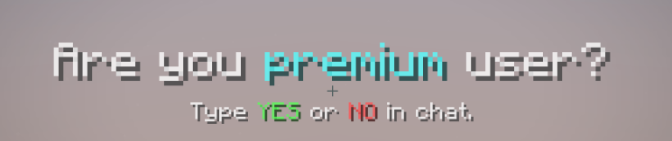

Návody¶
Deregistrace¶
Pro deregistraci na serveru v případě zapomenutí hesla, musíte zaslat zprávu na email vedení serveru: vedeni@mineflare.net
Do zprávy, prosíme připojte potřebné důkazy. V případě originalních verzí MC, zaslat sebe s pohledem F5 a napsat do chatu MF unregistrace - dale pak vyfotit (screenshot) a vložit na CTRL-V a poslat ve zprávě.
Získání Gemů¶
Zakoupení Gemu
Tuto možnost pro vás připravujeme... Pokud chcete gemy i tak koupit, kontaktujte vedení serveru.
Nalezením
Touto cestou gemy získaš pouze, za vyhrání Eventu, či jiných probíhajících soutěží na serveru.
AutoLogin¶
Touto kontrolou projde každý hráč po připojení.
AutoLogin se zapne po dotazu po prvnim pripojeni jestli vlastnite originalni verzi MC, tudíž napišete do chatu YES
Pokud vlastnis Originalní verzi MC, a vybral jsi volbu změny, přejdi k Unregistraci.
VIP Účet¶
Výhody VIP Účtu
Zakoupení teto pozice, získavate mnoho výhod.
VIP
Prefix VIP na serveru.
Rank VIP na Discordu i na Ts3
10K peněz na serveru Survival
200 tokenů (Globálně)
Na serveru Survival kit VIP-Kit
/ecna serveru Survival/flyna Lobby
Tyto vyhody se mohou kdykoliv změnit!
Platební metody připravujeme.....
EPIC-VIP
Prefix EPIC na serveru.
Rank EPIC na Discordu i na Ts3
30K peněz na serveru Survival
500 tokenů (Globálně)
Na serveru Survival kit EPIC-Kit
/ecna serveru Survival/flyna Lobby
Tyto výhody se mohou kdykoliv změnit!
Platební metody připravujeme.....
HERO-VIP
Tato hodnost se teprve připravuje....
Nahlášení hráče¶
Bohužel, se vždy někdo najde, kdo má zapotřebí znepříjemňovat hru.
Pro nahlašení podezřelého hráče použij:
/report <JMÉNO> <DŮVOD>
Například: /report Notch Xray
Váš ticket bude projednán v nejbližší době.
Upozornění Po nahlašení, nemusí být ticket vyřešen hned, kvůli již jiným reportům.